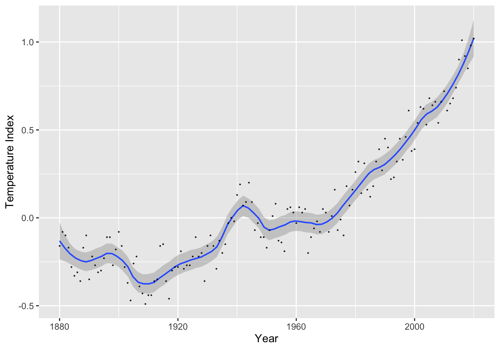
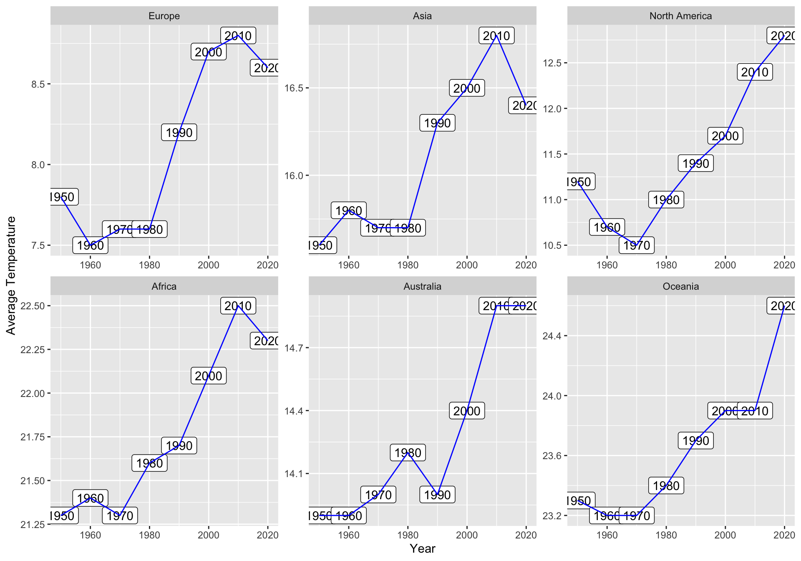
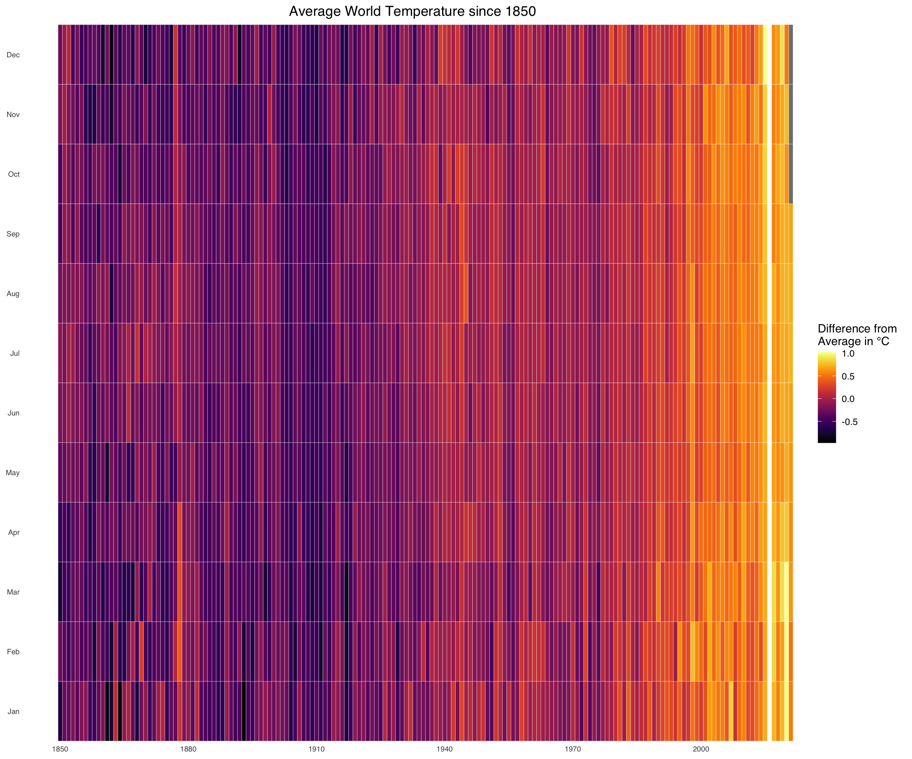
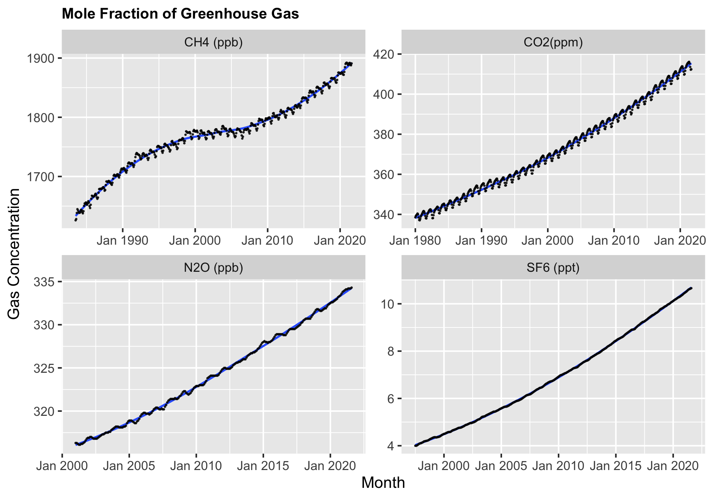

Chapter 5 Results
5.1 Main pattern of climate change
The first part aims to illustrate the main pattern of the Earth’s surface temperature for the past two to three centuries. The global warming is definitely an important topic when it comes to the area of climate change. We first take a look at the global land-ocean temperature index since 1880. The temperature index represents the change in global surface temperature relative to 1951-1980 average temperatures. Despite some ups and downs, we can see that Earth’s surface continues to significantly warm, with recent global temperatures being the hottest in the past 2,000-plus years.

The global warming has indeed impacted significantly on each and every continent for the past century. The following graphs show the pattern of the average temperature since 1950.
 To take a closer look on what has happened around the world in terms of temperature change, the following plots show the temperature in Celsius globally in a world map currently compared to 60 years ago. We can see that many places have become hotter based on the redness of each region.
Finally, to wrap up what we found globally, we plot the following heat map by taking a closer look at the temperature change pattern monthly. The plot captures the average temperature difference with respect to the global mean value since 1950.

5.2 Main causes of climate change
In the past more than a hundred years, the global land-ocean temperature kept increasing. So we plan to figure out what leads to the current warming trend. In the following discussion, we explore the effects of natural factors and human activities on temperature.
5.2.1 Natural causes
Changes of the Earth’s orbit around the sun and the tilt of the Earth’s axis define the sequence of glaciation periods and warm periods, and influence the climate on Earth by changing the energy the Earth could receive from the sun. Thus the metrics of Earth’s orbit and the solar irradiation are taken into account for the natural causes of climate change. In 1930s, Milutin Milankovitch introduced the concept of Milankovich cycles to describe the changes of Earth’s orbit, which includes eccentricity to describe the shape of Earth’s orbit, obliquity and precession to describe the Earth’s axis. Eccentricity = (aphelion-perihelion)/(aphelion+perihelion). Obliquity is the angle Earth’s axis of rotation is tilted as it travels around the Sun. And insolation, which denotes the daily mean solar irradiation at the top of Earth’s atmosphere, is introduced to show the irradiation the Earth receives from the sun. The following shows the changes of eccentricity, obliquity and insolation in the past around five thousand years from 2800s BC to now.
In the past five thousand year period, all three metrics fluctuates periodically and there is no obviously abnormal curve appears in the recent 200 years, when the global warming occurred, compared to the curve before. It seems that the value of eccentricity increases over a long time span, it is more reasonable to regard it as a normal fluctuation in a long period rather than a sudden change in short term, considering the eccentricity of Earth has a period of about a hundred thousand year.
Then we focus more on the recent 200 years.
In the short term, both obliquity and isolation have relatively smooth cycle changes while eccentricity has a declining trend.
To have a better insight of the relationship between these natural causes and temperature, we use the data from 1880 to draw the scatter plots and make linear fitting. In the plot, the color of points denotes the corresponding year.
From the plot between eccentricity and temperature, we could observe that there is a negative correlations between eccentricity and temperature. The points that gather at the bottom right corner are dark blue, which means in the early time, the temperature is lower while the value of eccentricity is larger, coinciding with the time series plots above. And for points in light blue, they are more likely to gather at top and middle of the left side. It shows that during the nearest time, the value of eccentricity is smaller than the previous but has a relatively stable value, while the temperature still keeps going up. So it seems that the change of Earth’s orbit has influenced the temperature to some degree, but it is not the main reason for the continuous warmer weather, at least in the recent 50 years when the value of eccentricity does not change a lot. And we also need to notice that in the other two scatter plots that show relationships of temperature with obliquity and insolation, there is no obvious linear correlations between two variables, indicating that changes of the tilt of Earth’s axis and the amount of solar irradiation does not play an important role in warming trend. As mentioned above, the change of Earth’s orbit influences climate change by changing the solar irradiation. Although the eccentricity has an obvious change, the irradiation received by Earth keeps fluctuating between a stable value in the recent 200 years, which could be explained by the claim that there are other factors that offset the effect of Earth’s orbit. Based on the analysis above, we could hardly draw to the conclusion that there are strong causal relationship between natural factors and global warming.
5.2.2 Human causes
The accumulation of greenhouse gas in the atmosphere will make the heat trapped on the surface of Earth, thus lead to the temperature increase on Earth. Since the Industrial Revolution, deforestation, fossil fuel use and other human activities have led to the huge increase in green house gas. Although there are some natural activities that can also influence the gas in atmosphere, the abnormal increase should be mainly attributed to human. So we collect the global mean mole fraction of four frequently analyzed green house gas, including CH\(_4\), CO\(_2\), N\(_2\)O, SF\(_6\), to explore their relationships with current climate change.
In the following plot, we show how the gas concentration of four green house gases varied monthly with time in the past years. The start time of each plot is based on the time National Oceanic and Atmospheric Administration (NOAA) started to record the global data of the gas.

In addition to the periodical fluctuations, the trends for mole fraction of all four gases are increasing. Except that the curve for CH\(_4\) has a platform from 2000 to 2007, other three curves show slightly faster growth than linear growth. For Further analysis, the plot below shows the growth rate of four gases. To eliminate the influence of periodical fluctuations on the understanding of the whole pattern of trend, we use the yearly data to display the changes.
Although from 1999 to 2006, the mole fraction of CH\(_4\) displays a negative growth or a small growth rate, in other years from 1880s to now, its growth rate is much larger than other gases. The growth rates of other three gases are relatively small, but show a continuous increasing trend. Then we analyze the relationships between the gas concentration in the atmosphere and global temperature by drawing scatter plots and hexagonal heatmaps. Every point in scatter plots denotes mean temperature and mean mole fraction in one month from Jan 2001 to Aug 2021.The color indicates to the time in scatter plots while indicates to the density of data points in hexagonal heatmaps.
In the scatter plots, we can observe obvious positive correlations between mole fraction and temperature for four gases. And in all four plots, the points with darker colors, which means earlier times, are more likely to gather at the left bottom corner, while the lighter blue points tend to gather at the right top corner. The scatter plots displays a pattern coinciding with the analysis above that the emissions of greenhouse gas are increasing as time goes by, and at the same time, the global temperature keeps an increasing trend. Then from the hexagonal heatmaps, we observe that the points at the left bottom corner have a higher density, while points in the center and at the right top corner of plots are relatively sparse. Considering that the time is uniformly distributed, it indicates that the growth rates for both gas and temperature are higher in more recent years. From the analysis above, we find that the greenhouse gas concentration and temperature have similar behaviors in recent years. So it is of high possibility that the accumulation of greenhouse gas in the atmosphere is one of the main reason for the global warming.
5.3 Main effects of climate change
In this part, we want to show the impacts of global warming to warn people to pay attention to climate changes. Rising temperatures have led to the gradual melting of a large number of glaciers, causing sea levels to rise and threatening coastal areas. The knock-on effects are: larger water areas –> more evaporation –> longer rainy seasons –> more flooding. Some scholars believe that global warming will lead to more extreme weather such as droughts and typhoons.
5.3.1 ice sheets losing mass
The Antarctic and Arctic are key and sensitive areas for global climate change. And the Greenland and Antarctic ice sheets are the largest ice bodies in the world. So the evolution of these two ice sheets plays an important role in the global climate system. When the north and south poles are warming at a rate much higher than the global average, what pattern can we discover?
The melting Antarctic ice sheet and Greenland ice sheet:
The Antarctic ice sheet is formed by the pressing of snow on the Antarctic continent over millions of years. It covers an area of about 14 million square kilometers and has an average thickness of 2,160 meters. It accounts for about 70% of the world’s total freshwater reserves. Greenland is covered with dense snow and ice over the years, and is often referred to as the “last ice zone” of the Arctic Ocean. In the summer of 2020, sea ice has become thinner due to long-term climate change, and strong summer winds have blown away the sea ice. A vast sea surface has appeared here. Scientists have found that under the background of global warming, thinning sea ice is more vulnerable under abnormal climatic conditions. For all kinds of life in ecologically fragile areas, climate change may really mean the demise of their homes.
From the two graphs above, we can clearly see that the mass of the ice sheets in Antarctic and Greenland is negatively correlated with time. Since 2002, the quality of these two ice sheets has been losing more and more rapidly. From 2002 to 2021, the cumulative ice loss in Antarctica was 2693.60 Gigatonnes; the corresponding number on Greenland Island was 5144.58 Gigatonnes.
The graphss shows that since the 21st century, the Greenland and Antarctic ice sheets have lost a large amount of ice at a rapid growth rate. Compared with the first 10 years of 2002-2011, the large-scale loss of the Greenland ice sheet in 2012-2021 has doubled, and the Antarctic ice sheet has more than tripled.
The msss of the Greenland Ice Sheet increased in 2002, but since 2003, the mass start to decrease and the rate of mass losing has been increasing. This is the same for the Antarctic ice sheet, it was still growing in 2002, and since then it has been losing mass every year. This is mainly due to the thinning of the glaciers at the main outlet of the western Antarctic ice sheet and the loss of mass of the Antarctic Peninsula ice sheet. The floating ice sheet has also become thinner.
5.3.2 global sea level rising
In the previous section, we discussed the melting of ice sheets due to rising temperatures in recent years. This will further increase the sea level, an impact that we cannot ignore. Of course, there are many factors that cause the sea level to rise, not only because of the melting of ice sheets, but also because the upper seawater heats up and the volume of the ocean is expands, and so on.
Why do we explore the sea level pattern? i.e Why sea level matters?
Sea level rise is a slow-onset natural disaster to human survival and economic development. Since it is slow onset, it is often ignored by people, thinking that a few millimeters of increase per year is not a danger. In fact, this kind of disaster is cumulative and gradual. Coupled with the impact of land subsidence in many coastal areas, sea level rise may reach 1 meter or more in a century. This is undoubtedly a disaster for people in many places. And just now, it has brought harm to residents in coastal areas. It makes the occurrence of catastrophic storm surges in coastal areas more frequent, floods intensify, coasts are receded, coastal lowlands are eroded, water in coastal areas is polluted, farmland is salinized, tidal range increases, wave action is strengthened, and coastal areas are weakened. The requirement of building stronger dams will force designers to improve engineering design standards and increase project funding. It will also aggravate the intrusion of seawater in the estuary, increase the difficulty of sewage discharge, and destroy the ecological balance.
## V1 V2 V3 V4 V5 V6 V7 V8 V9 V10 V11 V12
## 1 0 11 1993.012 452600 327401.3 -38.61 89.88 -38.78 -38.61 89.88 -38.78 -38.56
## 2 0 12 1993.039 447591 324498.4 -42.01 90.93 -39.80 -42.00 90.93 -39.80 -39.09
## 3 0 13 1993.066 459462 333018.2 -41.97 87.31 -39.65 -41.96 87.31 -39.64 -38.56
## 4 0 14 1993.093 410064 297483.2 -42.71 90.79 -39.69 -42.69 90.79 -39.67 -38.32
## 5 0 15 1993.120 446813 321635.8 -37.88 90.29 -38.78 -37.85 90.29 -38.75 -37.20
## 6 0 16 1993.147 405085 291945.9 -36.10 89.99 -37.73 -36.07 89.99 -37.70 -35.98
Using data from NASA Goddard Space Flight Center, we drew the graph above. We can see that the sea level is roughly positively correlated with time. From 1993 to 2021, the sea level has risen by 95.87mm. The rate of sea level rise is accelerating: From 1993 to 2010, the rate of sea level rise was about 2.5mm per year. However, from 2011 to 2021, the rate of sea level rise was about 4.3mm per year. This almost doubled. Moreover, it is worth noting that from the graph, we can see that the sea level actually rises with fluctuations. In the short term, sometimes it has a temporary downward trend. This seems to contradict our argument. However, in fact, we have explained in the previous part that there are many reasons for sea level changes, sometimes not only because of climate changes, but also may be affected by human actions. For example, one of the possible factors that caused the sea level to fall in the graph is global dam projects.
5.3.3 Severe storms and extreme events
As we already known from the previous part, climate changes lead to ice sheets mass loss, then induce the rising of global sea level, which contribute to flooding in coastal areas. However, it seems that this is only one of the extreme events that could be triggered by climate change. This year, the United Nations issued a survey report saying that today’s extreme weather outbreaks are related to the earth’s climate change, especially global warming. Anyone who has studied geography knows that a relatively stable climate zone and wind belt has formed on the earth due to the influence of factors such as latitude, the deflection of the earth, and uneven heating of the earth’s surface. The density of high-pressure air masses tends to flow toward low-pressure air masses, while the specific heat of ocean water is lower than that of land rocks. It is easier to form air masses with higher pressure over the ocean. Coupled with the influence of the deflection force of the earth, the earth has formed: polar east wind and prevailing west wind (Westerly zone), northeast monsoon, and southeast monsoon. These wind belts happen to be able to carry a large amount of water vapor from the ocean to the land. The west wind belt has more precipitation throughout the year, and the northeast, southeast monsoon belt is mainly rainy and hot in the same period. However, global warming has risen by more than 1°C compared with the last century, with the melting of extremely low glaciers and rising sea levels. However, this impact is still relatively limited. The biggest impact is the further warming of the earth, and the uneven heating between the earth’s land, ocean and atmosphere will become more serious, which may cause the original climate zone and wind belt to shift. Previously, the extreme high temperature in North America was the effect of the subtropical high pressure. In the high-pressure air mass, the atmospheric subsidence caused the lack of precipitation, the lack of internal flow, and the difficulty of the external air mass to intrude. The continuous sunny days caused the ground to heat the atmosphere, which in turn made the atmosphere hotter. Both El Niño and La Niña are caused by uneven heating of the earth and abnormal temperature in local areas.
## [1] "200012...1"
## [2] "31...2"
## [3] "600"
## [4] "200012...4"
## [5] "31...5"
## [6] "900"
## [7] "1104812"
## [8] "5165377"
## [9] "FLORIDA"
## [10] "12"
## [11] "2000"
## [12] "December"
## [13] "Extreme Cold/Wind Chill"
## [14] "Z"
## [15] "67"
## [16] "INLAND PALM BEACH"
## [17] "MFL"
## [18] "31-DEC-00 06:00:00"
## [19] "EST"
## [20] "31-DEC-00 09:00:00"
## [21] "0...21"
## [22] "0...22"
## [23] "0...23"
## [24] "0...24"
## [25] "...25"
## [26] "...26"
## [27] "NEWSPAPER"
## [28] "NA...28"
## [29] "...29"
## [30] "NA...30"
## [31] "NA...31"
## [32] "...32"
## [33] "NA...33"
## [34] "NA...34"
## [35] "NA...35"
## [36] "NA...36"
## [37] "NA...37"
## [38] "NA...38"
## [39] "NA...39"
## [40] "...40"
## [41] "...41"
## [42] "NA...42"
## [43] "...43"
## [44] "...44"
## [45] "NA...45"
## [46] "NA...46"
## [47] "NA...47"
## [48] "NA...48"
## [49] "Temperatures fell into the mid-20s over Glades, Hendry, eastern Collier, and western portions of Palm Beach and Broward counties and fell to 32 degrees in the farming areas of south Miami-Dade County. An 85-year old Belle Glade woman died in a fire caused by a kerosene heater. Fort Lauderdale Fire-Rescue reported an increase in breathing-related emergencies among the elderly. Damage to vegetable crops occurred in Hendry and Glades counties."
## [50] "...50"
## [51] "PDC"Observers from the National Weather Service kept a comprehensive record describing 48 different types of serious events, from localized thunderstorms, tornadoes and flash floods to regional events such as hurricanes, snowstorms and winter storms. We have counted the number of natural disasters in the United States each year from 2000 to 2021. What puzzles us is that statistics have found that the number of natural disasters does not have a clear upward trend, but rather fluctuates. Among them, the number in 2011 was the largest, almost 1.5 times that of other years. Although the number of disasters in 2021 is the least, it is not of high reference value, because 2021 has not yet ended and the data for this year is incomplete. Generally speaking, although the number of natural disasters is slowly increasing, they are very unstable and there is no obvious pattern. This leaves us room to think, does climate change really have a great impact on extreme weather?